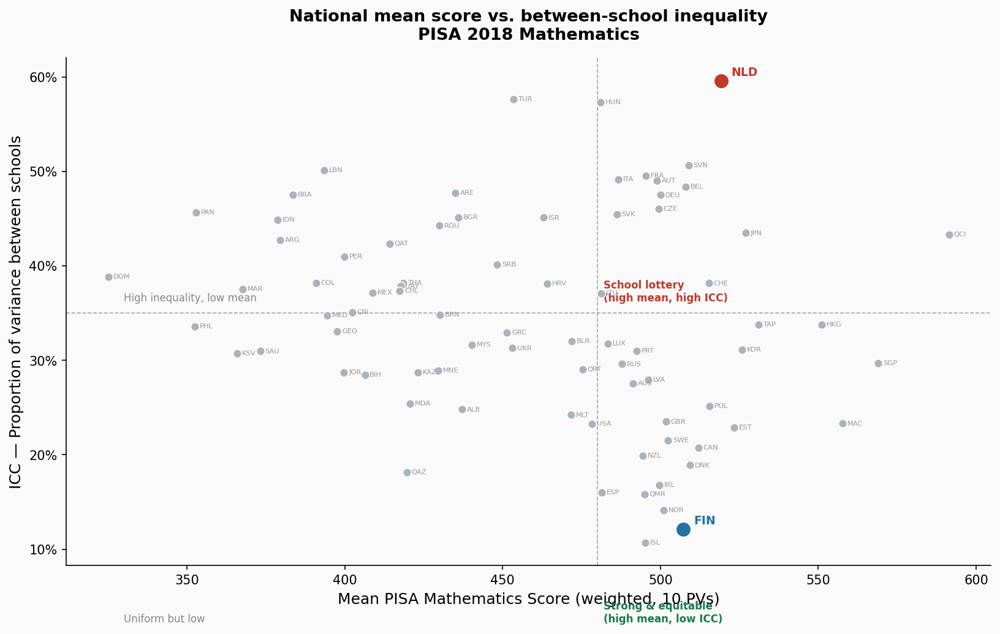
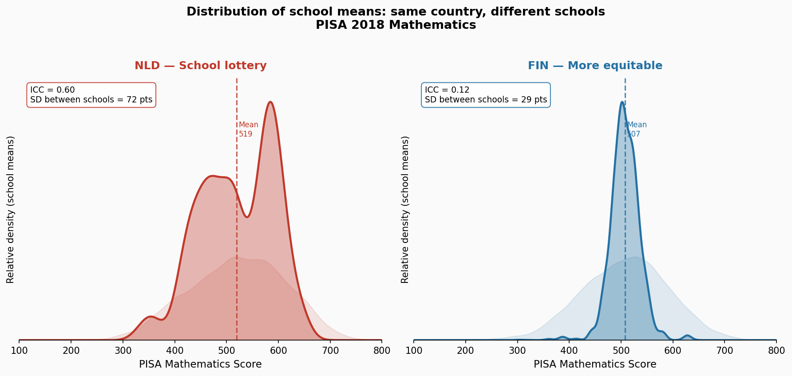
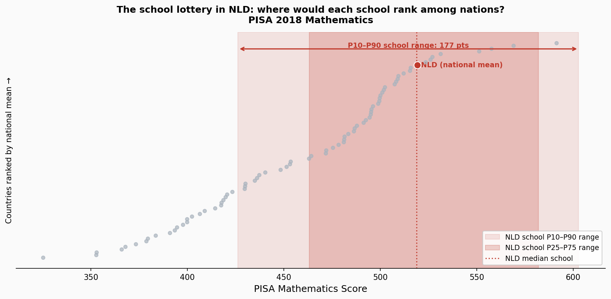

PISA 2018 · Between-School Inequality
The Netherlands ranks 9th in the world for mathematics. It also has schools that would rank 54th — and schools that would rank 1st, above every country on Earth. Both are true. At the same time.
League tables, newspaper headlines, and policy debates all converge on a single figure: the national average PISA score. Countries are ranked, compared, celebrated, and embarrassed — one number per country, one row in the table.
By that measure, the Netherlands is a success story. A mean mathematics score of 519 places it 9th globally — a genuinely strong education system by any conventional measure. Finland sits nearby at 507. Two high-performing European countries, close on the table, similar in headline performance.
What the table doesn't show is how those averages are composed — how spread out the students behind them are. A national average is a single number drawn across every school, every classroom, every student. And in some countries, it is hiding an enormous internal contradiction.
There is a straightforward way to ask this question. Of all the variation in student mathematics scores within a country, how much of it lies between schools rather than between individual students? If schools are similar, most variation is within schools — knowing which school a student attends tells you little extra. If schools are very different, school assignment becomes the dominant predictor.
This proportion is called the Intraclass Correlation Coefficient (ICC). Across 79 PISA 2018 participants, it ranges from 11% in Iceland — where schools are remarkably similar — to 59.6% in the Netherlands. The median is 34%.
Lowest ICC
11%
Iceland — schools nearly interchangeable
Median ICC
34%
Typical share explained by school
Highest ICC
59.6%
Netherlands — the school lottery

Figure 1. Each dot is a country. The x-axis is the national mean PISA 2018 Mathematics score (weighted, 10 plausible values). The y-axis is the ICC — the proportion of total student variance that lies between schools. The Netherlands (red) and Finland (blue) share similar national means but sit at opposite extremes of the vertical axis.
Notice the top-right quadrant — countries that combine strong national performance with high between-school inequality. Fourteen countries meet this definition. The Netherlands is their extreme. Also present: Germany, Austria, Belgium, France, Italy, Hungary. All countries with tracked school systems, where students are sorted into separate school types at an early age.
Picture two twelve-year-olds, both born in the same Dutch city, both completing primary school in the same June. A placement test — the CITO — routes Emma to a VWO school, the pre-university track. Liam goes to a VMBO school, the vocational track. Different buildings. Different teachers. Different futures.
University track
~580
Average score at a top-track Dutch school. This would rank the school #1 in the world — above Singapore, above China.
Vocational track
~450
Average score at a lower-track Dutch school. This would rank the school below the international PISA average — roughly equivalent to Greece or Croatia.
The national average of 519 describes neither Emma nor Liam particularly well. What it describes is the mixture — a country whose educational outcomes span nearly the entire global range within a single national system.
The Netherlands and Finland have national math means separated by just 12 points. But the shape of those means is entirely different.

Figure 2. Distribution of weighted school means for the Netherlands (left, red) and Finland (right, blue), using PV1 Mathematics with student final weights. The faint backdrop is the full student score distribution. Netherlands shows a clear bimodal pattern — the two peaks correspond to lower- and higher-track school types. Finland's schools form a single tight cluster. ICC values and standard deviations of school means are annotated.
NLD — SD Between Schools
72 pts
ICC = 0.596 · 156 schools
FIN — SD Between Schools
29 pts
ICC = 0.121 · 214 schools
Finland's school distribution says that wherever you enroll in Finland, you will encounter a roughly similar educational experience. The standard deviation of school means is 29 points — a narrow spread. In the Netherlands, that figure is 72 points — 2.5 times wider, and unmistakably bimodal.
The two humps in the Dutch chart are not noise. They are the tracks: the vocational schools clustering around one peak, the academic schools around another, with the national mean sitting in the valley between them. No individual Dutch student actually lives at 519.
Another way to see this: take the distribution of Dutch school means and ask where each percentile would land on the global country ranking. The answer shows the full breadth of the lottery.

Figure 3. All 79 countries ranked vertically by national mean mathematics score. The NLD school P10–P90 range is shown as a horizontal span. The national mean of 519 (rank #9) and the school percentile positions are annotated.
A student in the bottom 10% of Dutch schools is in a school environment equivalent to a country ranked 54th globally. A student in the top 10% of Dutch schools is in an environment that outperforms every country on Earth — including Singapore and the Chinese provinces that typically top the PISA rankings.
The national average of 519 sits at rank #9. But the 177-point school range behind it stretches from the 54th-ranked country system to beyond the 1st.
An important clarification: calling this a lottery does not mean school assignment is arbitrary. The Netherlands routes students into school types — VMBO, HAVO, VWO — based on primary school exit assessments at age twelve. The between-school variance is not a quirk or an accident; it is structurally produced by a tracked system.
The same pattern appears across the continent. Germany (ICC 0.475), Austria (0.490), Belgium (0.484), France (0.495), Hungary (0.574) — all tracked systems, all in the high-ICC quadrant. Countries with comprehensive schooling — Finland, Iceland, Norway, Ireland — consistently show lower ICCs.
The lottery is not about which specific school building a student enters. It is about which track they enter at age twelve — and track placement correlates with family socioeconomic background, often reproducing rather than disrupting existing inequalities. The PISA data shows the outcome of that sorting. It does not resolve the debate about whether tracking improves or harms overall performance — that requires causal evidence the PISA cross-section cannot provide.
The data below covers all 79 countries in this analysis. Sort by any column. Click a row for full details. Search to filter.
| Country | Mean | ICC (% between schools) | SD Between | Schools |
|---|
Metric: Intraclass Correlation Coefficient (ICC) via weighted variance decomposition.
Formula: σ²_between = (1/N) Σ_j n_j(ȳ_j − ȳ)²; σ²_within = (1/N) Σ_j Σ_i w_ij(y_ij − ȳ_j)²; ICC = σ²_between / (σ²_between + σ²_within). Consistent with PISA 2018 Data Analysis Manual (OECD, 2020).
PV handling: σ²_between and σ²_within computed separately for PV1MATH–PV10MATH, averaged before forming the ICC ratio.
Weights: Student final weight W_FSTUWT throughout. Schools with total weight < 10 excluded.
Validation: NLD ICC (0.596) and FIN ICC (0.121) consistent with OECD-published between-school variance figures for PISA 2018 Mathematics.
Limitations: All values are point estimates (no BRR standard errors). Mathematics only. ICC is descriptive — school membership predicts outcomes but causal effects of school assignment are not estimated. High ICC in tracked systems (NLD, HUN, AUT, BEL, DEU, FRA) is partly structural by design.
Source: OECD PISA 2018 student questionnaire data (SPSS_STU_QQQ.zip). Full analysis code: stories/accepted/school-lottery/analysis.py.